One agent, and every desk it reaches. How to read the risk propagation visualiser.
A sales rep connects an assistant to their mail, their CRM and their calendar. Nine things it can now do; four of them were asked for. Every one of the other five is a risk from that moment, held by somebody, carried by everybody above them, and it does not stop until it reaches the board. The visualiser draws that, live: connect and disconnect, add a control, and watch the red travel up and the green take its place. This is the guide to reading it and using it: who it is for, the story it tells, what a business gets from it, and how it works.
The figure: on Who owns what in AI, section 05. Every picture here is a capture of it, in the state the caption names, taken on 25 September 2026.
The example: an invented company and an invented agent. Nobody’s system was tested. Two product facts are used, both quoted from vendors’ pages on the article the figure sits on.
This is a business function before it is a security one. The people who need the picture are the ones who own the consequences, and most of them will never read an Agent Behaviour Policy row by row. Each of them arrives with one question, and the visualiser is built so that one click answers it.
The rep, who connected it
“What did I just switch on?”
As the person who connected the assistant, I want to see what it can do beyond what I asked, so that I am not the last to find out.
Click the assistant. Every row it can reach lights, the ones in the mandate in green and the rest in red, and the panel says which risks hold because of it. Click the rep and the picture narrows to what is inside their own authority: reading their own mail, and later their own calendar.
The head of Sales, who said yes
“What am I now answerable for?”
As the manager who approved it, I want to see the risks placed with me and what would end them, so that I can accept, fund or fix with my eyes open.
Click Sales: the risks it holds, the ones it carries from the rep, and the path up to the CEO. The list under the figure gives each one its state, the fact that established it, and the control that would end it.
The CISO and the CIO
“Which fact makes this true, and which control ends it?”
As the person the map routes data risks to, I want to see the risk in terms of facts and barriers, so that I can argue about a fact and not an opinion.
Click R2, the stranger’s email: three rows light, two connections, one chain. Tick the approval step and watch it cease, citing the ABP version, and watch the residual appear in its place.
Legal and the CFO
“Why is this on my desk?”
As a role that is usually informed and rarely asked, I want to see the risk that is mine to hold and the fact that ends it, so that a contract or a written answer counts as a control.
Click Legal: one risk, that customer mail goes to the provider and the notice does not say so. Tick the terms and it ceases. The CFO’s is the cover. Neither is technical, and both end a risk.
The CEO
“What reaches me, and how much of it is red?”
As the person every path runs through, I want the aggregate and the colour, so that I know how many risks nobody has signed for.
The two circles on the CEO: red for the unaccepted risks reaching them, black for the accepted. Click the CEO and every risk below stays lit, with its holder; the panel lists what the CEO holds and what they carry.
The board
“Who has accepted this, and until when?”
As the board, I want the two questions answered for every open risk, so that oversight is a list with names and dates on it.
The list under the figure is the board’s view: every risk that holds, its holder, its state, when its acceptance runs out, and the chain it reaches. Day 42 of the six weeks is what a good quarter looks like: nine open, none unaccepted, every path green.
The person who writes the behaviour policy
“Is the record right?”
As the author of the ABP, I want the figure to be computed from my rows and nothing else, so that a wrong picture means a wrong row, and I can fix the row.
Everything drawn comes from the rows, the risks, the roles and the controls in the page’s own data. Section 08 says how. If the picture disagrees with the deployment, the row is wrong, and the row is the thing to correct.
02 · The story
Six weeks, from a Monday morning.
A company of two hundred people sells software to other businesses. On a Monday a sales rep connects an assistant to their email, their calendar and the CRM, so it can draft follow-ups and suggest meeting times. Their manager says yes. Nobody else is asked, because nothing about it looks like a decision. Press Play the six weeks and this is what the figure shows.
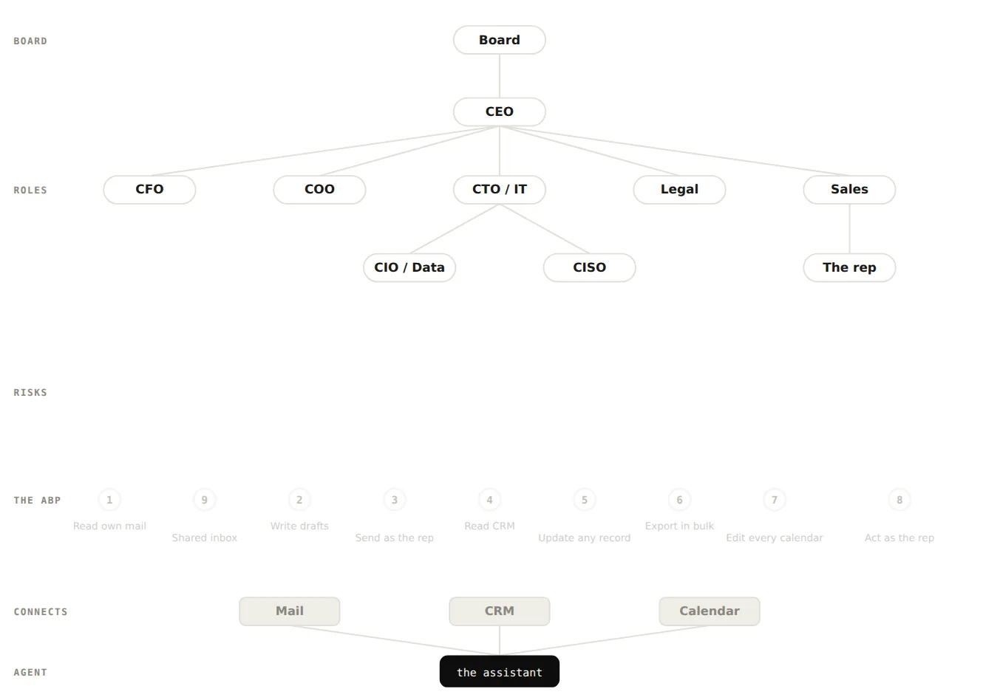
Before the Monday. Nothing is connected, so nothing holds. The rows are the nine things the assistant could do; they are faint because none of them is in the grant yet.
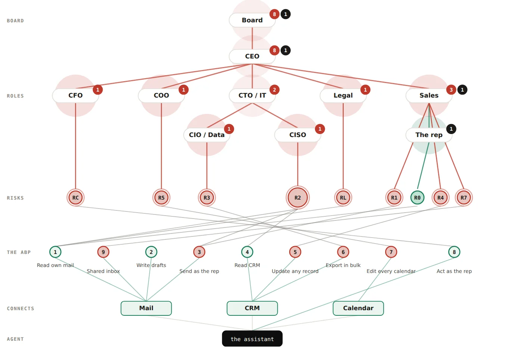
Day 0, the moment of connection. Nine rows in the grant, four in the mandate (green), five in the gap (red). Nine risks are established at once. Eight are placed by the map with the role whose area they touch and are unaccepted, so their paths are red all the way up. One, R0, is inside the rep’s own authority and the rep accepts it by connecting: the green one. The board reads 8 red, 1 black.
Day 2 and 3. The holders decide. The head of Sales accepts R7 for a month (the team’s customer mail is inside Sales’ authority), funds R1 for two weeks while IT adds an approval step to sending, and asks the CRM administrator to fix R4. The CISO accepts R2 for two weeks, noting that R1’s fix ends it too. The CIO funds R3 for a month while export is removed from the scope. Legal funds RL for three months: processing terms with the provider and a notice to customers. The CFO funds RC for three months: the broker is asked, in writing, what the cover says about an agent acting as staff.
Day 3. Eight of nine accepted or funded, and their paths are green. R5, the shared calendar, sits with the COO, who has not decided, so the COO’s path is still red, and the board reads 1 red, 8 black. Nothing about the agent has changed yet; what changed is that people signed.
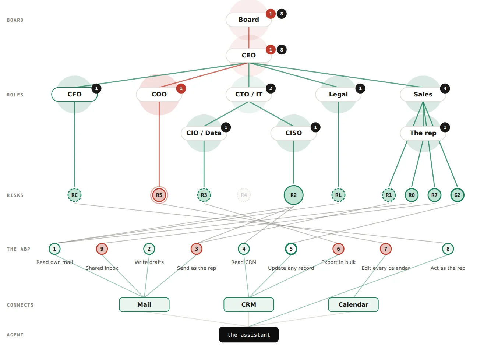
Day 4, the first control lands. The CRM limits the rep to their own accounts. Row 5’s barrier becomes a boundary (the thick green ring), the fact behind R4 no longer holds, and R4 ceases, citing ABP version 2. G2 takes its place: wrong entries on the rep’s own accounts still happen, at machine speed. It is Sales’ and it is accepted.
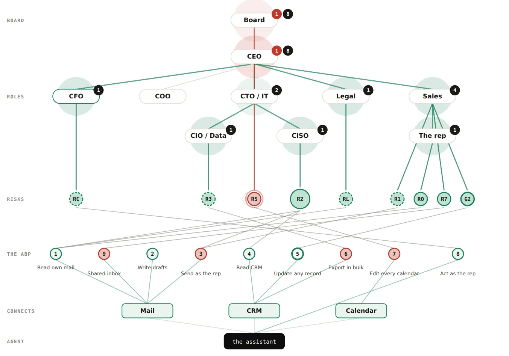
Day 7, silence. The COO has not acted on R5 in a week. It moves to the CEO, whom the COO answers to. The CEO was already carrying it in red; now the CEO holds it, and it is critical there.
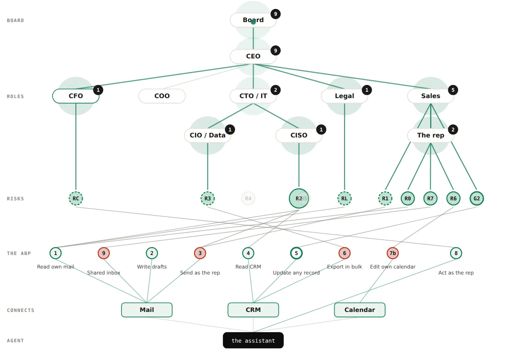
Day 10. The CEO narrows calendar access to the rep’s own calendar. Row 7 leaves the grant and row 7b arrives; R5 ceases on ABP version 3. The assistant can still edit the rep’s own events, so R6 is established, inside the rep’s authority, and accepted. For the first time every path to the board is green.Day 15. The approval step goes live: sending needs the rep’s approval, somewhere the assistant cannot reach. Row 3 is bounded; R1 ceases; R2 needed all three of its rows, loses one and ceases too. The lethal trifecta is broken on evidence. Two residuals appear: G1, a message approved in a hurry still goes out (the rep’s), and G4, an approval is a person clicking and people get worn down (the CISO’s).
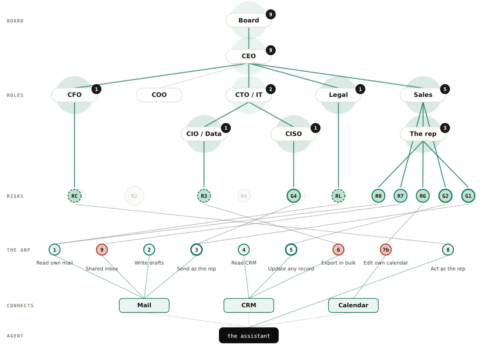
Day 42, what the board sees. Nine open risks and none unaccepted: four still funded or accepted from the gap (R3, R7, RL, RC), five inside their holders’ own authority, three of them the residuals of controls. Four ceased, each citing the version that ended it. Unbounded excess went from five to three.
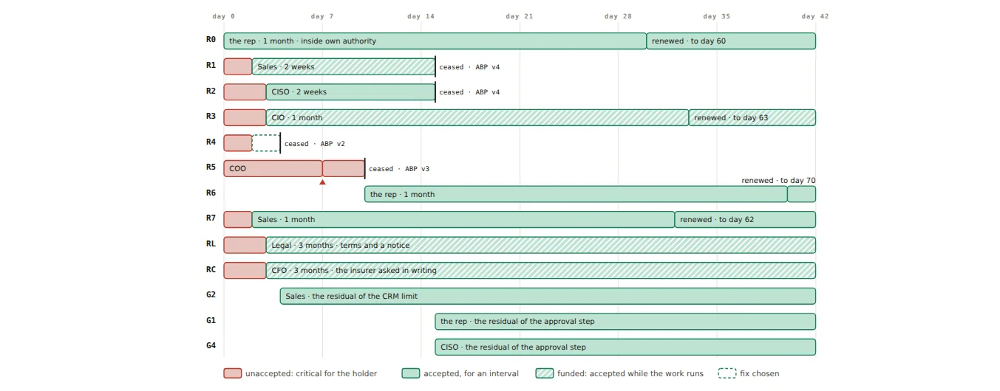
The same six weeks on one strip. Red is unaccepted, green accepted, hatched is funded. The small arrow on R5 is the week of silence. The last three lines begin where a control landed: the residuals, accepted from that day.
That is the whole story, and it is a story about people signing and facts changing. Nobody argued a risk down. Each one ended because a row changed, and the record says which version changed it.
03 · How to read it
Six bands, two colours, and a click.
The figure is drawn bottom up, the way the risk travels. Everything below the roles is the behaviour policy; everything from the roles up is the organisation.
BandWhat it showsWhat to click for
AgentThe assistant, acting as the rep in every account. When the execution proxy is on, it is drawn between the assistant and its connections.Everything the assistant can reach, and every risk that holds because of it.
ConnectsMail, CRM, Calendar. Green when connected.The rows that connection grants, the risks they establish and the roles they reach; and why the scope cannot be narrower.
The ABPThe nine rows. Green: in the mandate. Red fill: in the gap with nothing in the way. Red dashes: an expectation in the way. Thick green ring: a boundary in the way. Faint: not in the grant.Rows are not clickable; a risk or a connection lights the rows it involves.
RisksOne circle per risk that holds. Red: unaccepted. Green: accepted or funded. Larger: needs more facts. Faded and dashed: ceased. Each drifts to sit under its holder.What establishes it, its consequence, whether it can be undone, who holds it, and how far up it reaches.
RolesThe organisation chart the company drew. A halo: something reaches this role. Red path: an unaccepted risk is below. Two circles: red counts the unaccepted risks reaching the role, black the accepted.What it holds, what it carries from below, what it is informed of, and what the map says it protects.
BoardWhere every path ends. Its two circles are the totals.Every open risk, since every one reaches it.
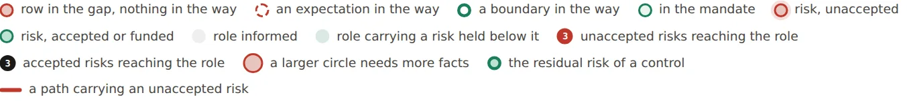
The legend, as it appears under the figure. Colour is the state of an acceptance. It is never a rating, and nothing on the page is scored.
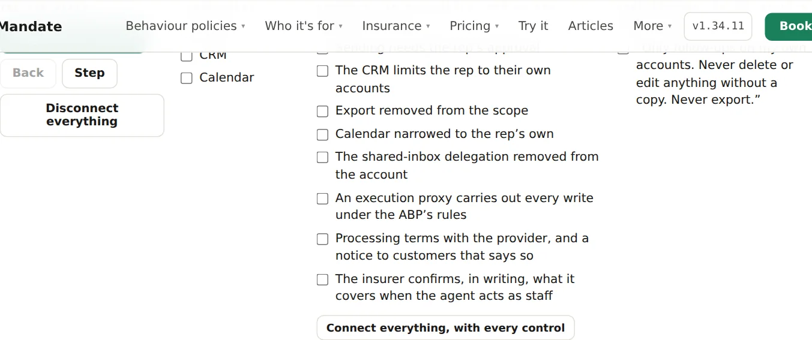
The controls. Left to right: the six weeks, replayed step by step; the three connections; eight controls, each a boundary the assistant cannot reach or a fact somebody changed; and the instructions, which are an expectation and not a control. The last button connects everything and turns every control on at once.
A click sticks; the rest fades.
Click a role, a risk, a connection or the assistant. Everything it touches keeps its colour; everything else fades, in the picture and in the list. Click it again, or the background, to see everything. Hovering only previews the panel.
The walk goes one way.
From a connection the walk goes up: its rows, the risks they establish, the roles they reach. It does not come back down from a risk to that risk’s other rows. So clicking the CRM never lights the Mail, even though R2 needs both. Click R2 itself to see both.
Colour travels up.
A role’s path is red while anything below it is unaccepted, whatever else it holds. The two circles say how much of each.
The counts are the engine’s.
Under the figure: rows in the grant, in the mandate, in excess, in unbounded excess; risks open, unaccepted, accepted; and the ABP version. They are recomputed from the record on every change, and they match the article’s tables because they come from the same data.
04 · One connection at a time
Three connections, each on its own.
Press Disconnect everything, then tick one connection. This is the cleanest way to see what a single scope does to a company, because nothing else is in the picture.
The CRM alone. Three rows: read every record the rep can see (in the mandate), update any record, export in bulk. Three risks: R3, the customer list leaves, held by the CIO; R4, accounts that are not the rep’s change, held by Sales; and RC, the cover question, held by the CFO, because the assistant acts as the rep the moment anything is connected.
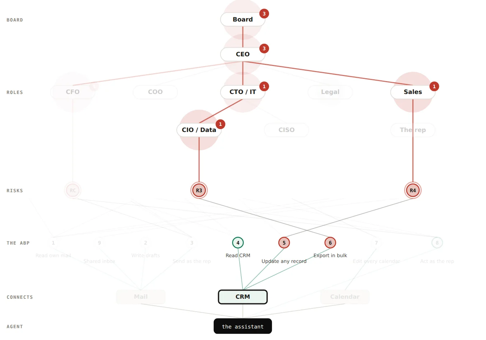
The CRM, selected. The walk goes up from the connection: rows 4, 5 and 6; R3 and R4; CIO → CTO → CEO → Board and Sales → CEO → Board. RC fades even though it holds, because it comes from row 8, which hangs off the assistant, not the CRM.
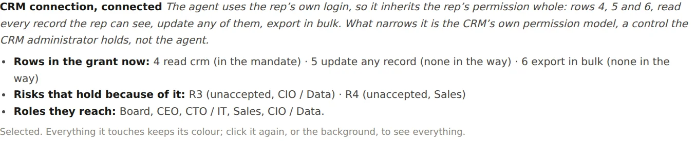
The CRM’s panel. Why the scope is what it is: the assistant uses the rep’s login and inherits the rep’s permission whole. What narrows it is the CRM’s own permission model, held by the CRM administrator.
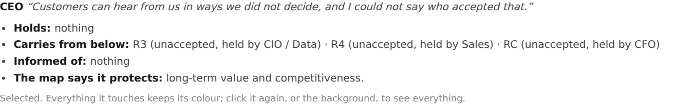
The CEO’s panel, same state. Holds nothing; carries three from below. This is the aggregate: the CEO did not connect anything and is answerable for all of it.
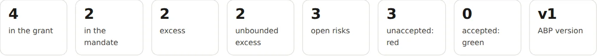
The counts. Four in the grant, two in the mandate, two in excess, none bounded. Three risks, all unaccepted. The board reads 3 red.
The Mail alone. Four rows: read the rep’s own mail and write drafts (in the mandate), send as the rep, and read the shared sales inbox the rep is delegated to. Five risks: R0, reading everything in the rep’s inbox, which is the rep’s own and accepted; R1, sending as the rep to anybody, and R7, reading every customer’s mail to the whole team, both Sales’; RL, customer mail going to the model provider without the notice saying so, Legal’s; and RC.
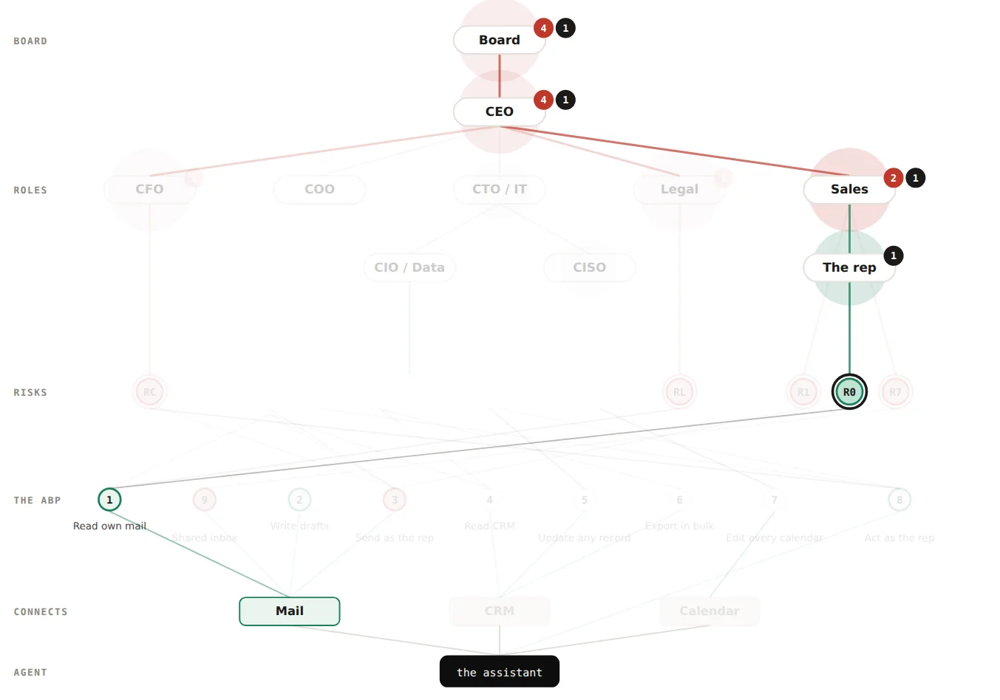
R0, selected. The accepted level. Reading the rep’s own mail is what the assistant is for, and it is a risk anyway: everything in that inbox, including what is not about work. The rep accepts it by connecting. Its path is green, and it reaches the board like every other.
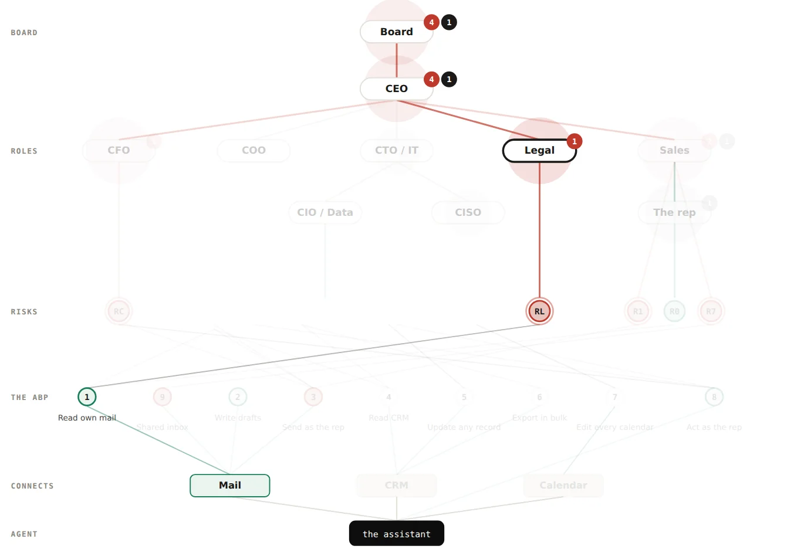
Legal, selected. One risk, and it is Legal’s to hold rather than to be told about: customer mail goes to the model provider to be read, and what the company tells customers does not say so. It is established by row 1, the same row as R0. One fact, two holders, two consequences.
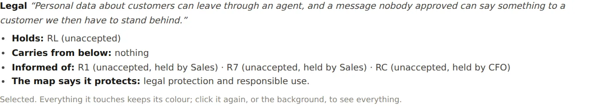
Legal’s panel. Holds RL; informed of R1 and R7. Informed is not holding: the halo is faint for those, and they do not count on Legal’s circle.
The Calendar alone. One row: create, edit and delete events on every calendar the rep can edit, including the shared one the company books customer meetings on. One risk from it, R5, the shared calendar rearranged with no way back, held by the COO, whose map row is operational integration; and RC again.
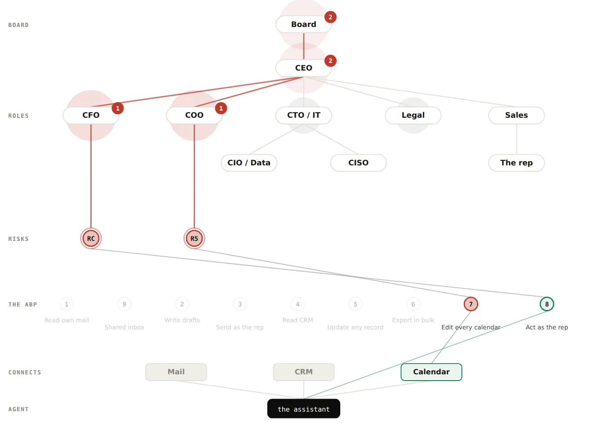
The Calendar alone. Two rows in the grant, one in the mandate. The COO holds R5. The board reads 2 red. The calendar is the smallest connection and the one whose edits cannot be undone, which is why it is the one that moves up on silence in the story.
ConnectionRows: grant / mandateRisks, and who holds themReachesThe board reads
Calendar2 / 1 (rows 7 and 8)R5 COO · RC CFOCOO, CFO, CEO, board2 red
05 · Combined
Together, a risk that none of them has alone.
Connections do not add up; they multiply. R2 is the example: it needs the assistant to read mail from anybody, to read the CRM, and to send to anybody. The Mail alone gives two of those. The CRM alone gives one. Together they give all three, and a risk appears that neither connection has on its own.
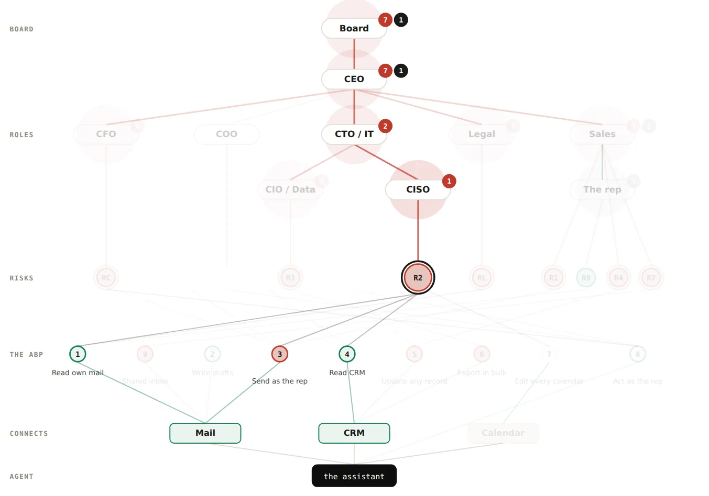
Mail and CRM connected, R2 selected. Three rows, two connections, one holder. R2 is drawn larger because it needs three facts, and it is the lethal trifecta: private data, untrusted content, a way out. Nothing is in the way but an instruction.
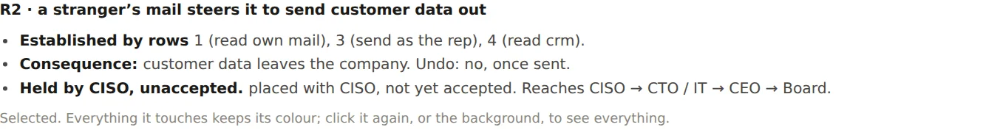
R2’s panel. Established by three rows; ends when any one of them is bounded or removed. That is why the approval step on day 15 ends R2 as well as R1.
All three. Nine rows, nine risks, eight red. Every one of the thirteen roles the map named is either on a path or informed, except the three the figure leaves out because nothing reaches them. This is the state the six weeks start from.
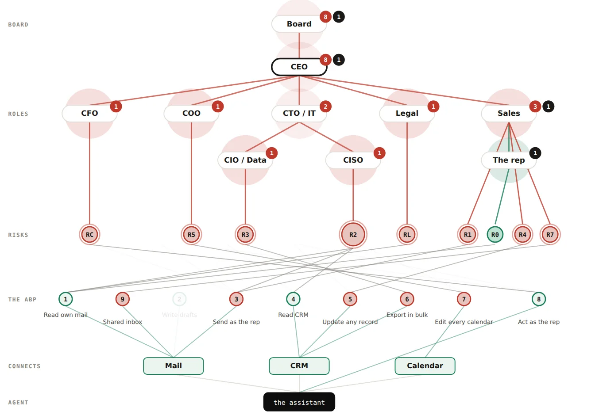
All three connected, the CEO selected. Everything stays lit, because everything reaches the CEO. The CEO holds nothing and carries eight red and one black. This is the picture of a decision nobody made.
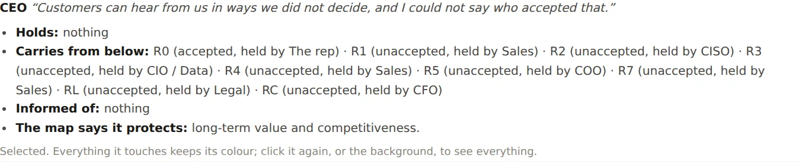
The CEO’s panel. Nine carried, one of them accepted. Each names its holder, so the CEO knows whose desk to walk to.
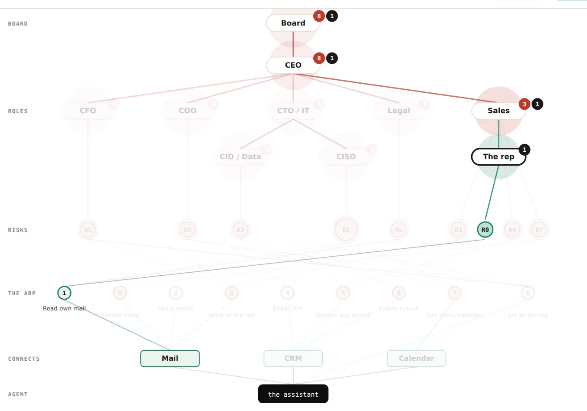
The rep, selected. One risk, and it is green: the rep holds only what is inside their own authority. Everything else the rep switched on belongs to somebody else, which is the point.
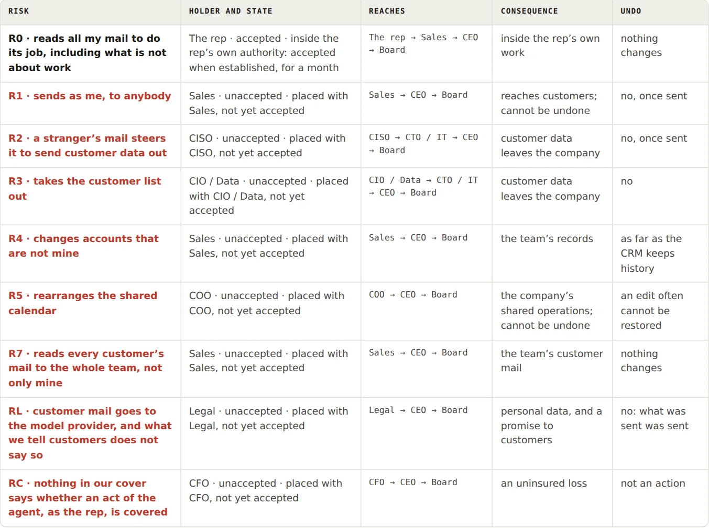
Every risk that holds, all three connected. The board’s list: who holds it, in what state, how far it reaches, what it would cost in words, and whether it can be undone. Eight of nine say not yet accepted.
06 · Remediation
Eight controls, one at a time, then all of them.
Start from everything connected and tick one control. Each control does one of three things: it puts a boundary on a row the assistant cannot reach; it removes a row from the grant; or it changes a fact a risk was established on. Every one of them ends a risk, and every one leaves a residual risk behind, green, inside somebody’s authority. That is what a control is: a trade of a red risk for a green one somebody can live with.
ControlWhat it does to the recordEndsLeaves, in greenUnbounded excess
Sending needs the rep’s approvalRow 3 gains a boundaryR1, and R2 with itG1 with the rep: a message approved in a hurry still goes out. G4 with the CISO: an approval is a person clicking5 → 4
The CRM limits the rep to their own accountsRow 5 gains a boundaryR4G2 with Sales: wrong entries on the rep’s own accounts, at machine speed5 → 4
Export removed from the scopeRow 6 leaves the grantR3nothing new (G3 appears only with the proxy)5 → 4
Calendar narrowed to the rep’s ownRow 7 leaves; row 7b arrivesR5R6 with the rep: their own meetings can change5 → 5: the narrower row is still in the gap
The shared-inbox delegation removedRow 9 leaves the grantR7nothing5 → 4
An execution proxy carries out every write under the ABP’s rulesEvery write row gains a boundary at once; reads are untouchedR1, R2, R4, R5, R3G1, G2, G4 as above; G3 with the CIO: records still leave one at a time; G5 with the CTO: the proxy is now the thing that can fail; G6 with the COO: when it is down, the assistant stops; G7 with Legal: its log is a copy of customer data5 → 1: only the shared inbox, a read
Processing terms with the provider, and a notice to customersChanges a fact; no row movesRLnothing5 → 5
The insurer confirms, in writing, what it coversChanges a fact; no row movesRCG8 with the CFO: an excess, and conditions to keep meeting, the ABP among them5 → 5
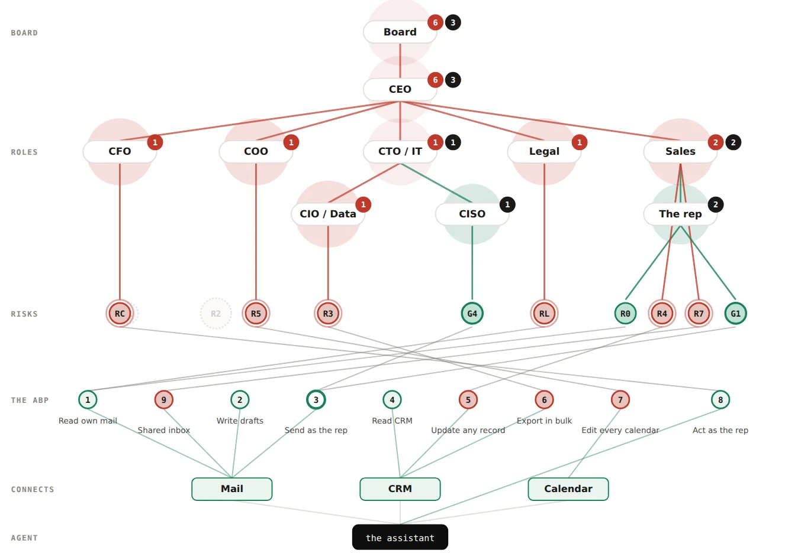
The approval step alone. One boundary, two risks ended, two residuals. The CISO’s path turns green; the others stay red.
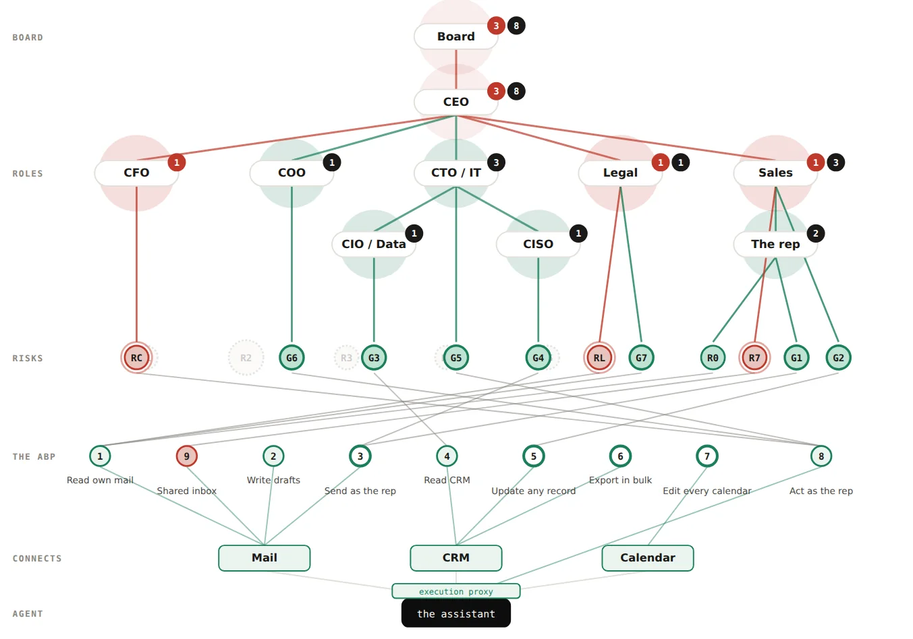
The proxy alone. One control in the middle bounds every write. Five risks end and seven residuals appear, spread across seven holders, because the proxy is now on the path of everything. Three stay red: the shared inbox (a read the proxy cannot stop), Legal’s and the CFO’s (facts, not writes).
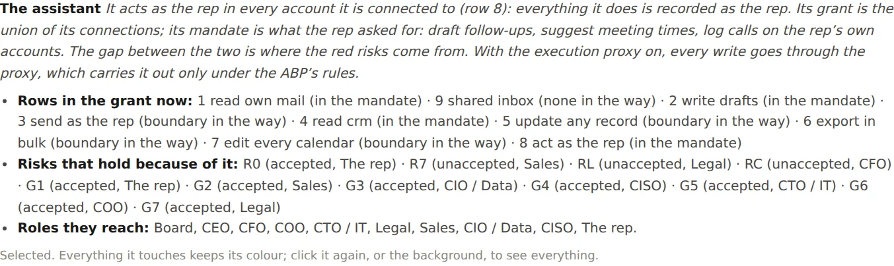
The assistant’s panel with the proxy on. Every write row reads boundary in the way; the reads still read in the mandate or nothing in the way.
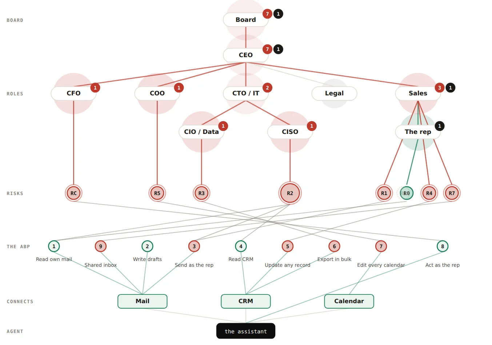
The terms alone. No row moves and a risk ends anyway, because the fact it was established on has changed. Legal’s path clears. A contract is a control.
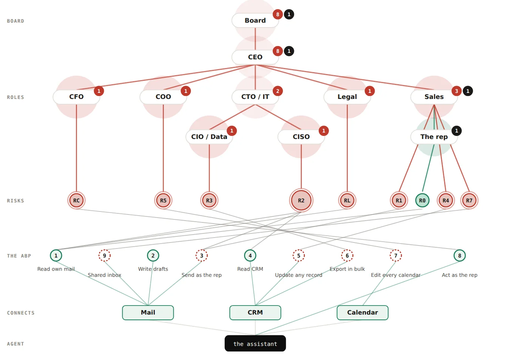
The instructions alone. Every row in the gap changes from nothing in the way to an expectation, and every risk stays lit. Unbounded excess does not move. An instruction is worth writing down, because it is what the assistant was told and the ABP is where that is written. It is not a control.
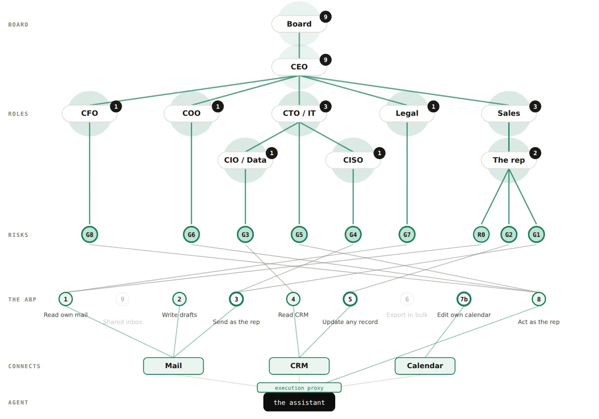
Every control on. The button under the controls does this in one click. Nine green risks remain and no red: what is left is what the business runs the assistant to take, plus what the controls themselves cost. Unbounded excess is nought.
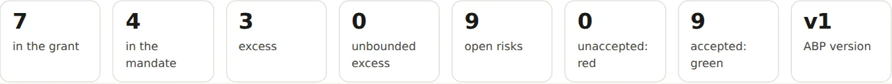
The counts with every control on. Seven in the grant, because export and the shared inbox left it. Three in excess, all bounded. Nine open, nine accepted.
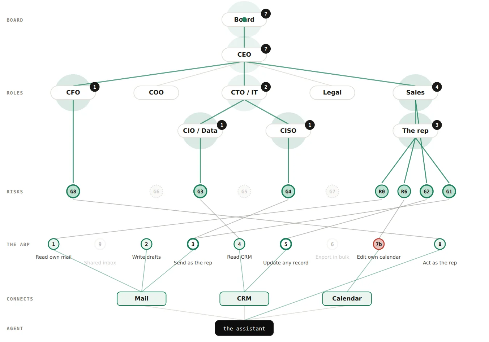
Every control except the proxy. Still no red: the approval step and the CRM limit bound the two writes that mattered. What changes is that four residuals disappear, the ones the proxy itself created. A control has a cost in risks too, and the picture shows it.
Read the table’s last column twice. Unbounded excess is the one count a control can move, and only a boundary moves it. The terms and the cover end a risk each and move it not at all, because they change what the company has promised, not what the assistant can do. Both kinds of control are real. Only one kind shows up in the ABP’s counts, which is why the risks are drawn as well as the rows.
07 · Business analysis
What a business gets from the picture.
The line between the accepted level and the gap.
A business runs an assistant to take some risk: reading the rep’s mail is a risk, and it is the job. The picture draws that risk in green from the first second, inside the rep’s authority. Everything red is outside somebody’s authority and waiting for a signature. The line between the two is the mandate, and the visualiser is the first place most companies will see their mandate as a line rather than a paragraph.
Who holds what, and the aggregate at the top.
Nine risks, seven holders, one CEO carrying all of them. The map placed each risk with the role whose area it touches; the chart carries it up. The two circles on the CEO are the number most boards have never seen: how many risks reach the top, and how many of them nobody has signed for. A board that can read 1 red, 8 black can ask one question instead of nine.
The business case for each control, with no score in it.
Every control in section 06 is described the same way: which row it bounds or removes, which risks end, which residuals appear, and where unbounded excess goes. That is a business case a CFO can read: this control turns R1 and R2, held by Sales and the CISO and carried by the CEO, into G1 and G4, held by the rep and the CISO, and accepted. No rating, no traffic light, no number anybody has to defend. The consequence is in words and the holder is a name.
Controls that are not technical.
The terms with the provider and the insurer’s written answer end a risk each. Legal and the CFO usually appear on risk registers as people to inform. Here they hold something, and the thing that ends it is on their desk, not IT’s. That is a change in who does risk management, and it is the change the acceptance loop asks for.
Silence is visible.
Day 7 is the picture of the thing registers never show: a risk nobody decided on, moving to the boss. It was already on the CEO’s path in red; now it is the CEO’s to hold. The COO did nothing wrong by the register’s standards, because the register would still say open. The chart says moved up.
What it does not tell you.
Three things, on purpose. It does not say how likely anything is. It does not put a number on a loss; the consequence is in words, and if a holder wants to attach a figure it is their estimate, signed with their acceptance, not the picture’s. And it takes every control as working: a control that is on and not working is a fact the ABP’s evidence tiers exist to record, and it is not modelled here.
How to use it in a room. Put it on the screen with the six weeks at day 0. Ask the questions in order.
Which of these did we mean to switch on?The mandate. Green rows are the answer; red rows are the gap. If the person who connected it says a red row was meant, the mandate is wrong, not the picture: correct the row.
Who holds each red one, and until when?Click each holder. The panel says what they hold and the list says what state it is in. A risk with no acceptance is critical for whoever holds it today.
What ends it?Click the risk. The panel names the rows that establish it, so the control is the thing that bounds or removes one of them. Section 06’s table is the menu.
What does the control leave behind, and who accepts that?Tick it and look for the green. A residual with no holder willing to accept it is a control the company is not ready for.
Who can stop the assistant, and how fast?Not on this figure; it is on the plug profile. An acceptance shorter than the stop is a finding.
08 · Technical analysis
How it works, and how to build one.
The figure is a few hundred lines of script inside the page, with no library and nothing loaded from anywhere. It is worth describing in full, because the same model runs the article’s tables and could run on a real behaviour policy.
DataWhat it holdsWhere it comes from
Rolesid, label, the role it answers to, what the map says it protects, its sentence about the exposurethe article’s sections 05 and 08; the chart is the example company’s
ConnectionsMail, CRM, Calendar; on or offthe reader, or a step of the six weeks
Rowsthe ABP’s nine rows: which connection grants each, whether it is in the mandate, its label; row 7b replaces row 7 when the calendar is narrowedthe article’s section 04 table
Risksthe rows it needs; the role the map places it with; its consequence in words; whether it can be undone; the roles it informs; whether it is inside its holder’s own authority; for a residual, which controls create it; for a fact risk, which control ends itthe section 04 risk table, and the residuals named in the text
Controlseight switches, and the instructionsthe controls named in the six weeks and in this article’s section 06
Stepsnine days of the six weeks, each a function that changes the state, with a title and a notethe article’s section 07
The state, and what holds.
The state is small: which connections are on, which controls are on, whether the instructions are in, the acceptance record per risk, the ABP version, and the day. From it, three functions decide everything. A row is present if its connection is on and no control has removed it. A row’s barrier is not needed if it is in the mandate, boundary if a control bounds it (the proxy bounds every write at once), expectation if the instructions are in, else none. A risk holds if every row it needs is present and none is bounded; a residual holds only when one of its controls is on; a fact risk stops holding when its control is on.
The acceptance record follows the facts.
After any change, settle() walks the risks. One that starts to hold gets a record: unaccepted, placed with its role; or accepted, if it is inside that role’s own authority. One that stops holding is marked ceased, citing the ABP version that changed. A step of the six weeks can overwrite a record, which is how a holder’s decision is applied. Nothing is ever deleted; the strip in section 02 is the same records laid out by day.
The chain, and the colour.
chain(holder) walks answers_to from the holder to the board. For every live risk, its holder holds it and every role above carries it. A role’s red circle counts the unaccepted risks in that set, its black circle the accepted; its path is red if the red count is above zero. That is the whole of the propagation: a risk reaches every role on its chain, and the colour is the worst state on the chain below.
The walk goes one way per hop.
Each node type has an upward navigation and a downward one, as functions: up from the assistant to its connections, from a connection to its rows, from a row to the risks that need it, from a risk to its holder, from a role to the role above. Down is the inverse. A selection walks up from the node and down from the node, and never turns. This is why selecting the CRM does not light the Mail: the walk reaches R2 going up from row 4, and does not come back down R2’s other rows. It is the same rule the ontology figure states: every verb has an inverse, and a query follows one of them.
Drawing.
Everything is SVG created by script: createElementNS for the nodes, textContent for every string, no innerHTML anywhere, no library. Classes carry the state and CSS carries the colour, so a page with its script disabled still shows the shell. Risks have a home position and a target under their holder; a small loop moves them a fraction of the distance each frame, and a separation pass keeps two risks from sitting on each other. When a risk is established, a dot runs from each fact through the risk and up the whole chain; when one ceases, a dot runs back down to the fact. Readers who prefer reduced motion get the same picture without the movement.
Deterministic.
The six weeks are replayed from a fresh state up to the chosen day on every step, so stepping back and forward always gives the same picture, and the counts under the figure match the article’s tables because they are computed from the same rows. The captures on this page were taken by a script that set each state the caption names and photographed the result.
What is invented, and what is not.
The company, the rep, the nine rows, the risks, the holders and the six weeks are invented, and say so. Two facts are quoted from vendors: that Google’s Gmail consent lines each cover the whole account (our Gmail record, read 16 September 2026), and that Google Calendar documents no way to restore an edited event (our Calendar article, 24 September 2026). Every control is assumed to work.
To run it on a real agent.
Replace the rows with a published behaviour policy’s grant and mandate; the sixteen examples on this site already compute the gap and the barrier per row. Replace the roles with the company’s chart. Have each holder write their risks in their own words, with the rows that establish them and the facts that would end them. The engine does not change. That is the next step, and it is not built.
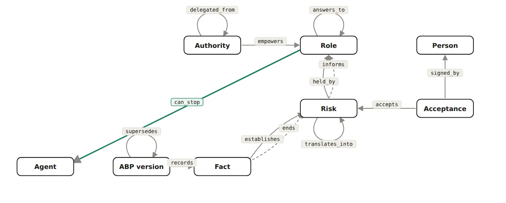
The ontology the walk follows.recorded_in, establishes and held_by go up; their inverses go down. The visualiser is this graph, drawn for one agent and walked one way at a time.
The picture starts with the rows, and the rows come from the deployment. The free prompts have your agent list its own reach in about twenty minutes, with nothing collected. From there the gap, the holders and the paths follow.